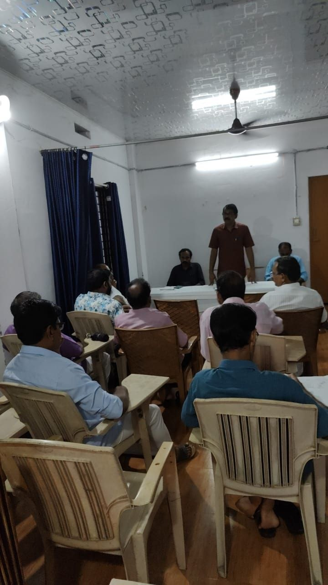
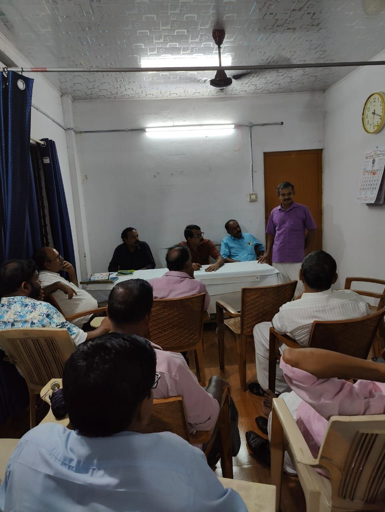
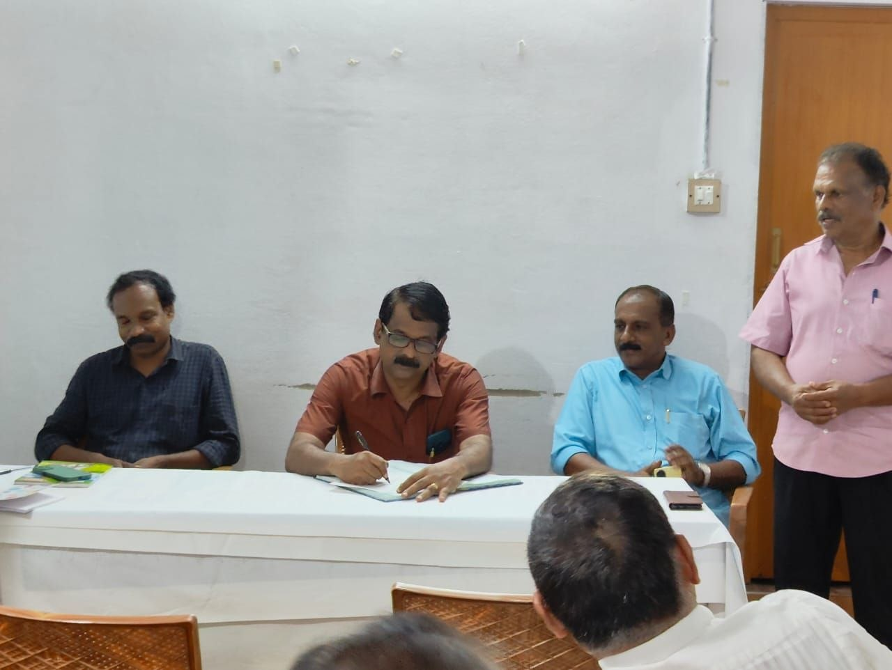
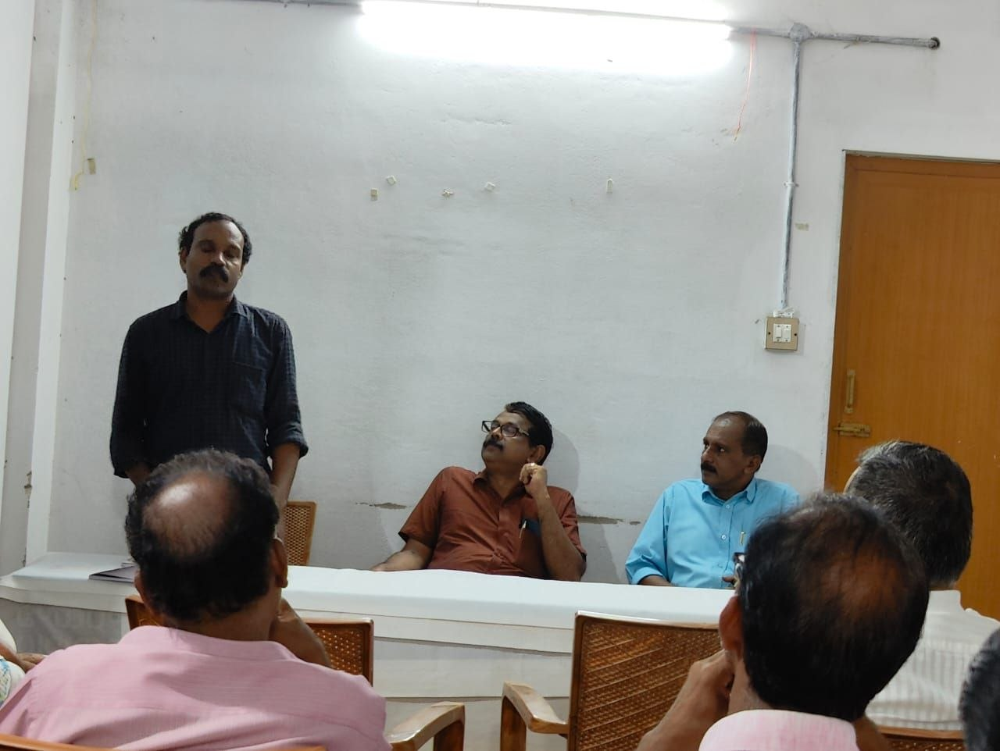
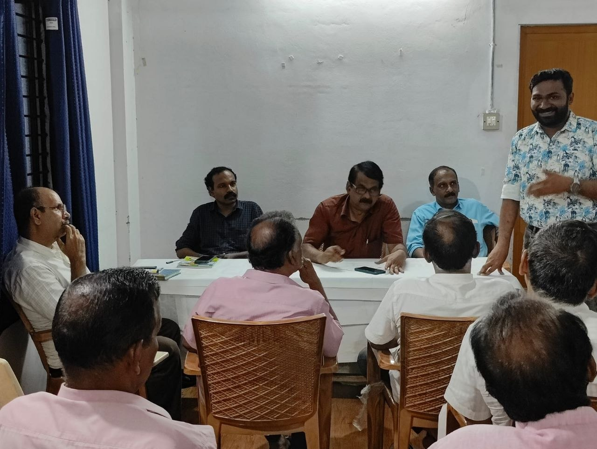
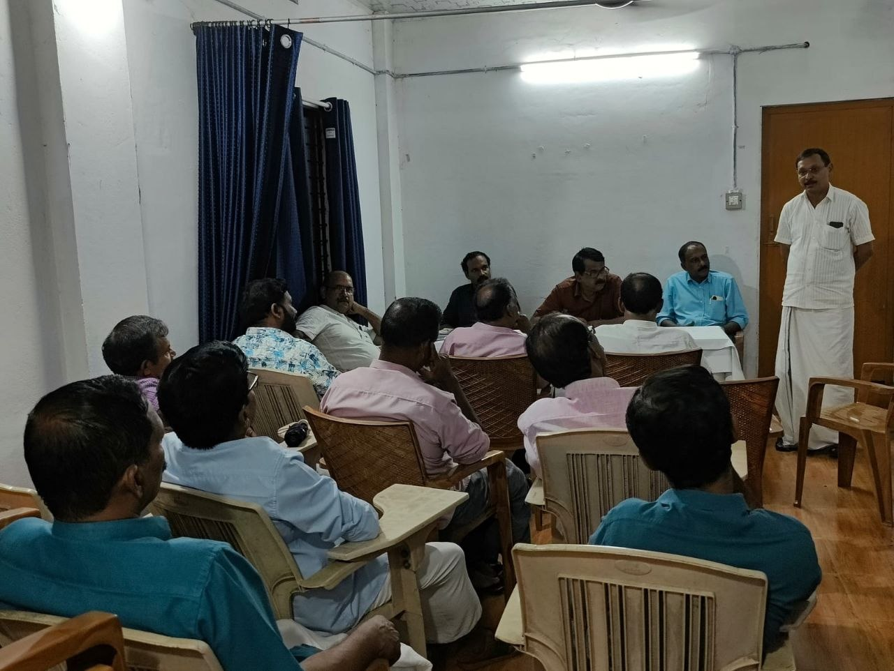
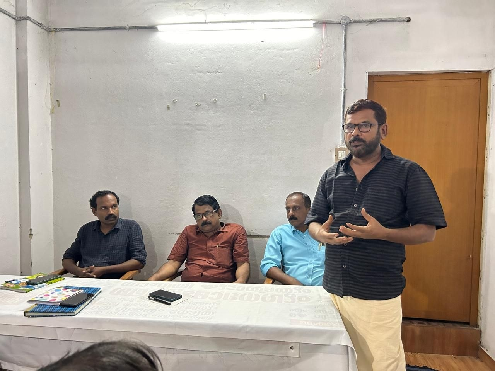
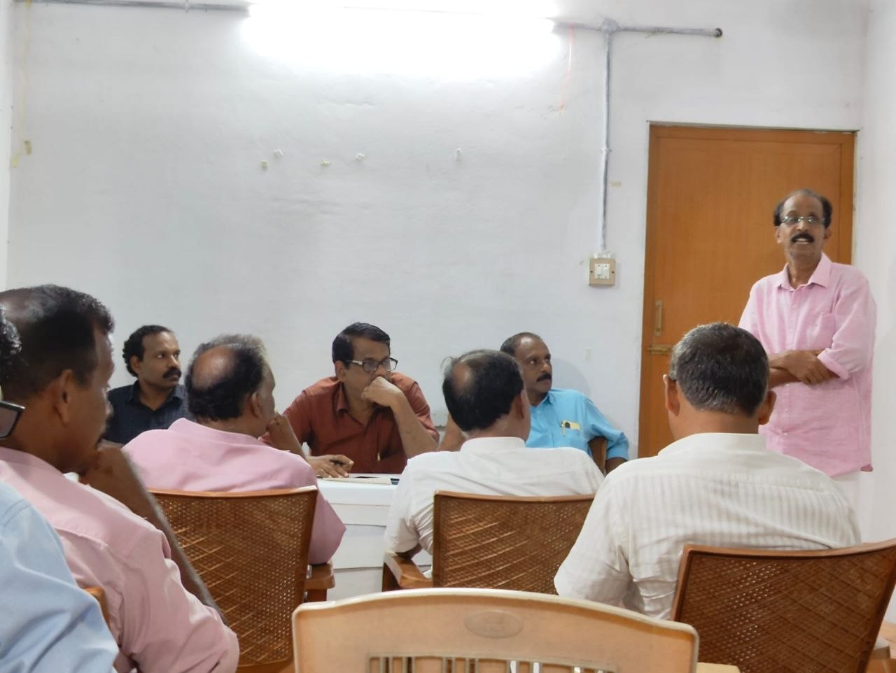
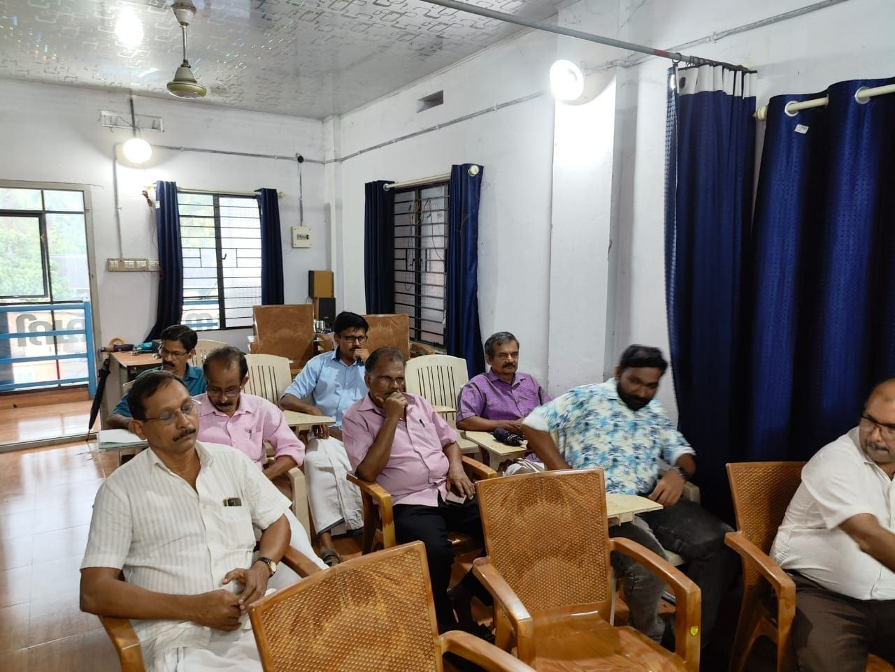

ഇന്ന് വൈകിട്ട് സ്കൂളിൽ അൽപം താമസിച്ചപ്പോ 5.15 ഒക്കെ ആയപ്പോ എന്നാ ആലക്കോട് പിടിച്ചേക്കാം എന്ന തോന്നൽ ഒരു നഷ്ട്ടം ആയില്ല. ദീപു മാഷിൻ്റെ ക്ലാസ്, ശശിയേട്ടൻ, തമ്പി സാർ തുടങ്ങി പലരുടെയും ചർച്ചകൾ എന്നിവയിൽ നിന്ന് പാരിസ്ഥിക ജാഗ്രതയുടെയും ജൈവാനുഭവങ്ങളുടെയും പാഠങ്ങൾ പകർന്ന് കിട്ടി. പരിപാടിക്ക് ശേഷം നമ്മുടെ കവിയും തേനീച്ച കർഷകനും ആയ തമ്പി ചേട്ടനോടുള്ള സംഭാഷണം ജീവിതത്തിലെ വേറിട്ട ഒരു അനുഭവമായി മാറി. പ്രകൃതിയോട്, കൃഷിയോട്, മനുഷ്യരോട്, കവിതയോട് ഒക്കെ ഇണങ്ങി സന്തോഷമായി ജീവിക്കുന്ന ഒരു ജൈവ മനുഷ്യനെ കുറച്ച് നേരം കേട്ട് നിന്നപ്പോ ഉള്ളിൽ എവിടെയോ പച്ചപ്പ് വന്നു തെട്ടു. മണ്ണിനെ, കൃഷിയെ ഒരുപാട് സ്നേഹിച്ച പപ്പയുടെ ഓർമ്മകൾ ഉള്ളിൽ ഉണരാനും തമ്പി ചേട്ടനെ കേൾക്കൽ കാരണമായി.
ചിലരെ ചുമ്മാതെ കേൾക്കുക എന്നതും ഒരു സുഖമാണ്.